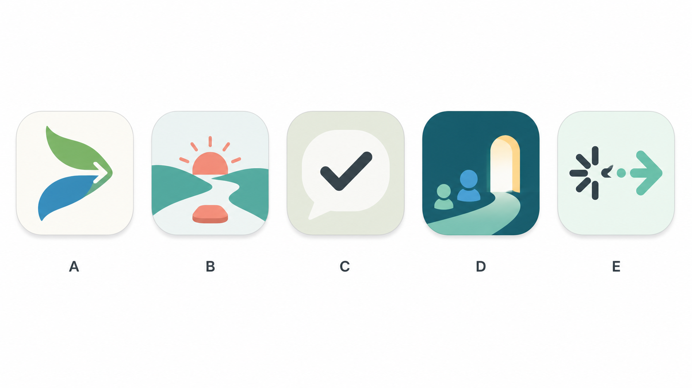

Voice to one step
Say the messy sentence. StartKind returns a first action that can begin in 5-15 minutes.
iOS first · English default · Simplified Chinese optional
An execution assistant for adults with ADHD: one kind, tiny next step when starting feels harder than knowing.
Today feels like too much.
Say the messy sentence. StartKind returns a first action that can begin in 5-15 minutes.
The app learns from real completion time and adjusts estimates instead of asking for perfect planning.
After delay or interruption, StartKind resumes with a smaller next step, not streak pressure.
Start a 25-minute quiet room or invite a friend when doing it alone is the blocker.
The selected StartKind icon uses the first direction with a larger center arrow for a clearer App Store read.
